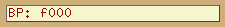

The debugger in Stella may never be complete, as we're constantly adding new features requested by homebrew developers. However, even in its current form it's still quite powerful, and is able to boast at least one feature that no other 2600 debugger has; it's completely cross-platform.
Pressing ` (aka backtick, backquote, grave accent) toggles the debugger on & off. When you exit the debugger, the emulation resumes at the current program counter, and continues until either a breakpoint/trap is hit, or the ` key is pressed again.
The main debugger window will look similar to the following (note that the letters here are for reference in the document below; they aren't actually present in the debugger):
For space reasons, the Prompt, TIA, I/O and Audio displays are split into 4 tabs, only one of which is visible at a time. You can use the mouse or keyboard to select which tab you want to view. Pressing Shift with the left or right arrow keys cycles between tabs from right-to-left and left-to-right, respectively. Pressing Tab cycles between widgets in the current tab (except for in the Prompt area, where 'tab' used for something else).
You can also enter the debugger at emulator startup by giving a breakpoint on the command line:
; will enter the debugger the first time the instruction at "kernel" runs stella -break kernel mygame.bin ; $fffc is the 6502/6507 init vector. This command will break and enter the ; debugger before the first 6507 instruction runs, so you can debug the ; startup code: stella -break "*($fffc)" mygame.bin
Using the ` key will always enter the debugger at the end of the frame (scanline 262, for NTSC games). This is because Stella only checks for keystrokes once per frame. Once in the debugger, you can control execution by stepping one instruction, scanline, or frame at a time (or more than one at a time, using commands in the prompt). You can also set breakpoints or traps, which will cause the emulator to enter the debugger when they are triggered, even if it happens in mid-frame.
The debugger tracks changes to the CPU registers and RAM by displaying changed locations or registers with a red background after each step, trace, scanline, or frame advance. This sounds simple, and it is, but it's also amazingly useful.
One clarification about the change tracking: it only tracks when values have changed. If the ROM writes a value into a RAM location that already contained the same value, that's not considered a change (old value was $whatever, new value is the same, so nothing got tracked). This may change in a future version of Stella.
This is a command-line interface, similar to the DOS DEBUG command or Supermon for the C=64.
Editing keys work about like you'd expect them to: Home, End, Delete, arrows, etc. To scroll with the keyboard, use Shift-PageUp and Shift-PageDown or Shift-Up and Shift-Down arrow keys. You can also scroll with the mouse. Copy and paste is not (yet?) supported.
To see the available commands, enter "help" or "?". Most commands can be abbreviated: instead of "clearbreaks", you can type "clear" or even just "cl". However, "c" by itself is the Toggle Carry command.
Bash-style tab completion is supported for commands and labels (see below). Other Bash-style commands are also supported, as follows:
For now, there are some functions that only exist in the prompt. We intend to add GUI equivalents for all (or almost all?) of the prompt commands in future releases. People who like command prompts will be able to use the prompt, but people who hate them will have a fully functional debugger without typing (or without typing much, anyway).
While entering a command or label, you can type a partial name and press the Tab key to attempt to auto-complete it. If you've ever used "bash", this will be immediately familiar. If not, try it: load up a ROM, go to the debugger, type "print w" (but don't press Enter), then hit Tab. The "w" will change to "WSYNC" (since this is the only built-in label starting with a "w"). If there are multiple possible completions (try with "v" instead of "w"), you'll see a list of them, and your partial name will be completed as far as possible.
Tab completion works on all labels: built-in, loaded from a symbol file, or set during debugging with the "define" command. However, it does not yet work on functions defined with the "function" command, nor does it work on filenames.
Almost every command takes a value: the "a" command takes a byte to stuff into the accumulator, the "break" command takes an address to set/clear a breakpoint at. These values can be as a hex constant ($ff, $1234), or as complex as "the low byte of the 16-bit value located at the address pointed to by the binary number 1010010110100101" (which would be "@<\1010010110100101"). You can also use registers and labels in expressions.
You can use arithmetic and boolean operators in expressions. The syntax is very C-like. The operators supported are:
+ - * / (add, subtract, multiply, divide: 2+2 is 4)
% (modulus/remainder: 3%2 is 1)
& | ^ ~ (bitwise AND, OR, XOR, NOT: 2&3 is 2)
&& || ! (logical AND, OR, NOT: 2&&3 is 1, 2||0 is 0)
( ) (parentheses for grouping: (2+2)*3 is 12)
* @ (byte and word pointer dereference: *$80 is the byte stored
at location $80)
[ ] (array-style byte pointer dereference: $80[1] is the byte
stored at location ($80+1) or $81)
< > (prefix versions: low and high byte. <$abcd is $cd)
== < > <= >= !=
(comparison: equality, less-than, greater-than, less-or-equals,
greater-or-equals, not-equals)
<< >> (bit shifts, left and right: 1<<1 is 2, 2>>1 is 1)
Division by zero is not an error: it results in zero instead.
None of the operators change the values of their operands. There are no variable-assignment or increment/decrement operators. This may change in the future, which is why we used "==" for equality instead of just "=".
The bitwise and logical boolean operators are different in that the bitwise operators operate on all the bits of the operand (just like AND, ORA, EOR in 6502 asm), while the logical operators treat their operands as 0 for false, non-zero for true, and return either 0 or 1. So $1234&$5678 results in $1230, whereas $1234&&$5678 results in 1. This is just like C or C++...
Like some programming languages, the debugger uses prefixed characters to change the meaning of an expression. The prefixes are:
"*"
Dereference a byte pointer. "*a" means "the byte at the address that
the A register points to". If A is 255 (hex $ff), the result will be
the value currently stored in memory location 255. This operator
will be very familiar to you if you're a C or C++ programmer. It's
equivalent to the PEEK() function in most 8-bit BASICs. Also, the
debugger supports array-like byte dereferences: *address can be
written as address[0]. *(address+1) can be written as address[1],
etc.
"@"
Dereference a pointer to a word. This is just like the "*" byte deref,
except it refers to a 16-bit value, occupying 2 locations, in
low-byte-first format (standard for the 6507).
The following are equivalent:
@address
*address+$100**(address+1)
address[0]+#256*address[1]
(TODO: add (indirect),y and (indirect,x) syntax)
"<"
Take the low byte of a 16-bit value. This has no effect on an 8-bit
value: "a" is equal to "<a". However, "<$1234" equals "$34".
">"
Take the high byte of a 16-bit value. For 8-bit values such as
the Accumulator, this will always result in zero. For 16-bit values,
"<$1234" = "$12".
"#"
Treat the input as a decimal number.
"$"
Treat the input as a hex number.
"\"
Treat the input as a binary number.
These only have meaning when they come before a number, not a label or a register. "\1010" means 10 decimal. So do "$0a" and "#10". "a" by itself is always the Accumulator, no matter what the default base is set to.
If you don't specify any number base prefix, the number is assumed to be in the default base. When you first start Stella, the default base is 16 (hexadecimal). You can change it with the "base" command. If you want to change the default base to decimal permanently, you can put a "base #10" command in your "autoexec.stella" file (see the section on "Startup").
Remember, you can use arbitrarily complex expressions with any command that takes arguments (except the ones that take filenames, like "loadsym").
A breakpoint is a "hotspot" in your program that causes the emulator to stop emulating and jump into the debugger. You can set as many breakpoints as you like. The command is "break xx" where xx is any expression. If you've created a symbol file, you can use labels.
Example: you've got a label called "kernel". To break there, the command is "break kernel". After you've set the breakpoint, exit the debugger ("quit" or click the Exit button). The emulator will run until it gets to the breakpoint, then it will enter the debugger with the Program Counter pointing to the instruction at the breakpoint.
Breakpoints happen *before* an instruction is executed: the instruction at the breakpoint location will be the "next" instruction.
To remove a breakpoint, you just run the same command you used to set it. In the example, "break kernel" will remove the breakpoint. The "break" command can be thought of as a *toggle*: it turns the breakpoint on & off, like a light switch.
You could also use "clearbreaks" to remove all the breakpoints. Also, there is a "listbreaks" command that will list them all.
A conditional breakpoint causes the emulator to enter the debugger when some arbitrary condition becomes true. "True" means "not zero" here: "2+2" is considered true because it's not zero. "2-2" is false, because it evaluates to zero. This is exactly how things work in C and lots of other languages, but it might take some getting used to if you've never used such a language.
Suppose you want to enter the debugger when the Game Reset switch is pressed. Looking at the Stella Programmers' Guide, we see that this switch is read at bit 0 of SWCHB. This bit will be 0 if the switch is pressed, or 1 otherwise.
To have an expression read the contents of an address, we use the dereference operator "*". Since we're looking at SWCHB, we need "*SWCHB".
We're only wanting to look at bit 0, so let's mask off all the other bits: "*SWCHB&1". The expression now evaluates to bit 0 of SWCHB. We're almost there: this will be 1 (true) if the switch is NOT pressed. We want to break if it IS pressed...
So we invert the sense of the test with a logical NOT operator (which is the "!" operator): !(*SWCHB&1). The parentheses are necessary as we want to apply the ! to the result of the &, not just the first term (the "*SWCHB").
"breakif !(*SWCHB&1)" will do the job for us. However, it's an ugly mess of letters, numbers, and punctuation. We can do a little better:
"breakif { !(*SWCHB & 1 ) }" is a lot more readable, isn't it? If you're going to use readable expressions with spaces in them, enclose the entire expression in curly braces {}.
Remember that Stella only checks for input once per frame, so a break condition that depends on input (like SWCHB) will always happen at the end of a frame. This is different from how a real 2600 works, but most ROMs only check for input once per frame anyway.
Conditional breaks appear in "listbreaks", numbered starting from zero. You can remove a cond-break with "delbreakif number", where the number comes from "listbreaks".
Any time the debugger is entered due to a trap, breakpoint, or conditional break, the reason will be displayed in the status area above below the TIA Zoom display.
There is one annoyance about complex expressions: once we remove the conditional break with "delbreakif" or "clearbreaks", we'd have to retype it (or search backwards with the up-arrow key) if we wanted to use it again.
We can avoid this by defining the expression as a function, then using "breakif function_name":
function gameReset { !(*SWCHB & 1 ) }
breakif gameReset
Now we have a meaningful name for the condition, so we can use it again. Not only that: we can use the function as part of a bigger expression. Suppose we've also defined a gameSelect function that evaluates to true if the Game Select switch is pressed. We want to break when the user presses both Select and Reset:
breakif { gameReset && gameSelect }
If you've defined a lot of complex functions, you probably will want to re-use them in future runs of the debugger. You can save all your functions, breakpoints, conditional breaks, and watches with the "save" command. If you name your saved file the same as the ROM filename and place it in the ROM directory, it'll be auto-loaded next time you load the same ROM in Stella. The save file is just a plain text file called "filename.stella", so you can edit it and add new functions, etc. You can also create a file called "autoexec.stella" which will be loaded when the debugger starts, no matter what ROM you have loaded. This file should live in the "base directory" (which is the current directory on Windows or $HOME/.stella on UNIX), not the ROM directory.
Stella has some pre-defined functions for use with the "breakif" command. These allow you to break and enter the debugger on various conditions without having to define the conditions yourself.
Built-in functions and pseudo-registers always start with an _ (underscore) character. It is suggested that you don't start labels in your game's source with underscores, if you plan to use them with the Stella debugger.
| Function | Definition | Description |
|---|---|---|
| _joy0left | !(*SWCHA & $40) | Left joystick moved left |
| _joy0right | !(*SWCHA & $80) | Left joystick moved right |
| _joy0up | !(*SWCHA & $10) | Left joystick moved up |
| _joy0down | !(*SWCHA & $20) | Left joystick moved down |
| _joy0button | !(*INPT4 & $80) | Left joystick button pressed |
| _joy1left | !(*SWCHA & $04) | Right joystick moved left |
| _joy1right | !(*SWCHA & $08) | Right joystick moved right |
| _joy1up | !(*SWCHA & $01) | Right joystick moved up |
| _joy1down | !(*SWCHA & $02) | Right joystick moved down |
| _joy1button | !(*INPT5 & $80) | Right joystick button pressed |
| _select | !(*SWCHB & $01) | Game Select pressed |
| _reset | !(*SWCHB & $02) | Game Reset pressed |
| _color | *SWCHB & $08 | Color/BW set to Color |
| _bw | !(*SWCHB & $08) | Color/BW set to BW |
| _diff0a | !(*SWCHB & $40) | Right difficulty set to A (easy) |
| _diff0b | *SWCHB & $40 | Right difficulty set to B (hard) |
| _diff1a | !(*SWCHB & $80) | Right difficulty set to A (easy) |
| _diff1b | *SWCHB & $80 | Right difficulty set to B (hard) |
Don't worry about memorizing them all: the Prompt "help" command will show you a list of them.
Two "registers" are provided for you to use in your conditional breaks. These are _scan and _bank.
_scan always contains the current scanline count. You can use this to break your program in the middle of your kernel. Example:
breakif _scan==#64
This will cause Stella to enter the debugger when the TIA reaches the beginning of the 64th scanline.
_bank always contains the currently selected bank. For 2K or 4K (non-bankswitched) ROMs, it will always contain 0. One useful use is:
breakif { pc==myLabel && _bank==1 }
This is similar to setting a regular breakpoint, but it will only trigger when bank 1 is selected.
A watch is an expression that gets evaluated and printed before every prompt. This is useful for e.g. tracking the contents of a memory location while stepping through code that modifies it.
You can set up to 10 watches (in future the number will be unlimited). Since the expression isn't evaluated until it's used, you can include registers: "watch *y" will show you the contents of the location pointed to by the Y register, even if the Y register changes.
The watches are numbered. The numbers are printed along with the watches, so you can tell which is which. To delete a watch use the "delwatch" command with the watch number (1 to whatever). You can also delete them all with the "clearwatches" command.
Note that there's no real point in watching a label or CPU register without dereferencing it: Labels are constants, and CPU registers are already visible in the CPU Widget
A trap is similar to a breakpoint, except that it catches accesses to a memory address, rather than specific location in the program. They're useful for finding code that modifies TIA registers or memory.
An example: you are debugging a game, and you want to stop the emulation and enter the debugger whenever RESP0 is strobed. You'd use the command "trap RESP0" to set the trap, then exit the debugger. The emulator will run until the next time RESP0 is accessed (either read or write). Once the trap is hit, you can examine the TIA state to see what the actual player 0 position is, in color clocks (or you can in the future when we implement that feature in the TIA dump!)
Unlike breakpoints, traps stop the emulation *after* the instruction that triggered the trap. The reason for this is simple: until the instruction is executed, the emulator can't know it's going to hit a trap. After the trap is hit, the instruction is done executing, and whatever effects it may have had on e.g. the TIA state have already happened... but we don't have a way to run the emulated VCS in reverse, so the best we can do is stop before the next instruction runs.
Traps come in two varieties: read access traps and write access traps. It is possible to set both types of trap on the same address (that's what the plain "trap" command does). To set a read or write only trap, use "trapread" or "trapwrite". To remove a trap, you just attempt to set it again: the commands actually toggle the trap on & off. You can also get rid of all traps at once with the "cleartraps" command.
Use "listtraps" to see all enabled traps.
Type "help" to see this list in the debugger.
a - Set Accumulator to value xx
bank - Show # of banks (with no args), Switch to bank (with 1 arg)
base - Set default base (hex, dec, or bin)
break - Set/clear breakpoint at address (default: current pc)
breakif - Set breakpoint on condition
c - Carry Flag: set (to 0 or 1), or toggle (no arg)
cheetah - Use Cheetah cheat code (see http://members.cox.net/rcolbert/)
clearbreaks - Clear all breakpoints
cleartraps - Clear all traps
clearwatches - Clear all watches
colortest - Color Test
d - Decimal Flag: set (to 0 or 1), or toggle (no arg)
define - Define label
delbreakif - Delete conditional break created with breakif
delwatch - Delete watch
disasm - Disassemble from address (default=pc)
dump - Dump 128 bytes of memory at address
exec - Execute script file
frame - Advance emulation by xx frames (default=1)
function - Define expression as a function for later use
height - Change height of debugger window
help - This cruft
+ list - List source (if loaded with loadlist)
listbreaks - List breakpoints
listtraps - List traps
listwatches - List watches
loadstate - Load emulator state (0-9)
+ loadlist - Load DASM listing file
loadsym - Load symbol file
n - Negative Flag: set (to 0 or 1), or toggle (no arg)
pc - Set Program Counter to address
poke - Set address to value. Can give multiple values (for address+1, etc)
print - Evaluate and print expression in hex/dec/binary
ram - Show RAM contents (no args), or set address xx to value yy
reload - Reload ROM and symbol file
reset - Reset 6507 to init vector (does not reset TIA, RIOT)
riot - Show RIOT timer/input status
rom - Change ROM contents
run - Exit debugger, return to emulator
+ runto - Run until first occurrence of string in disassembly
s - Set Stack Pointer to value xx
save - Save breaks, watches, traps as a .stella script file
saverom - Save (possibly patched) ROM to file
saveses - Save console session to file
savestate - Save emulator state (valid args 0-9)
savesym - Save symbols to file
scanline - Advance emulation by xx scanlines (default=1)
step - Single step CPU (optionally, with count)
+ tia - Show TIA state (NOT FINISHED YET)
trace - Single step CPU (optionally, with count), subroutines count as one instruction
trap - Trap read and write accesses to address
trapread - Trap read accesses to address
trapwrite - Trap write accesses to address
undef - Undefine label (if defined)
v - Overflow Flag: set (to 0 or 1), or toggle (no arg)
watch - Print contents of address before every prompt
x - Set X Register to value xx
y - Set Y Register to value xx
z - Zero Flag: set (to 0 or 1), or toggle (no arg)
Commands marked with a + are partially implemented.
When selected, this tab shows detailed status of all the TIA registers (except for audio; use the Audio tab for those).

Most of the values on the TIA tab will be self-explanatory to a 2600 programmer. The top line (with all the hex values) displays the raw values read from the TIA locations, as they would be seen by the CPU.
Many of the variables inside the TIA can only be written to by the 6502. The debugger lets you get inside the TIA and see the contents of these variables. These include the color registers, player/missile graphics and positions, and the playfield.
You can control almost every aspect of the TIA from here, too: most of the displays are editable. You can even toggle individual bits in the GRP0/1 and playfield registers (remember to double-click).
The group of buttons labelled "Strobes" allows you to write to any of the strobe registers at any time.
The collision registers are displayed in decoded format, in a table. You can see exactly which objects have hit what. These are read-only displays; you can't toggle the bits in the current release of Stella. Of course, you can clear all the collisions from the TIA tab with the CXCLR Strobe button.
To the right of each color register, you'll see a small rectangle drawn in the current color. Changing a color register will change the color of this rectangle.
When selected, this tab shows detailed status of the Input, Output, and Timer portion of the RIOT/M6532 chip (the RAM portion is accessed in another part of the debugger).

As with the TIA tab, most of the values here will be self-explanatory to a 2600 programmer, and almost all can be modified.
This tab lets you view the contents of the TIA audio registers. In the current release of Stella, these are read-only displays. This tab will grow some features in a future release.
In the upper left of the debugger, you'll see the current frame of video as generated by the TIA. If a complete frame hasn't been drawn, the partial contents of the current frame will be displayed up to the current scanline, with the contents of the old frame (in black & white) filling the rest of the display. Note that if 'phosphor mode' has been enabled for a ROM, you will see the effect here as well. That is, no flicker will be shown for 30Hz display, even though a real system would alternate between drawing frames (and hence produce flicker).
You can use the "Scan+1" button or the prompt "scan" command to watch the TIA draw the frame one scanline at a time.
You can also right-click anywhere in this window to show a context menu, as illustrated:

The options are as follows:
To the right of the TIA display (E) there is TIA information, as shown:

The indicators are as follows:
Below the TIA Info (F) is the TIA Zoom area. This allows you to enlarge part of the TIA display, so you can see fine details. Note that unlike the TIA display area, this one does generate frames as the real system would. So, if you've enabled 'phosphor mode' for a ROM, it won't be honoured here (ie, you'll see alternating frames at 30Hz display, just like on a real system).
You can also right-click anywhere in this window to show a context menu, as illustrated:

These options allow you to zoom in on the image for even greater detail. If you click on the output window, you can scroll around using the cursor, PageUp/Dn and Home/End keys. You can also select the zoom position from a context menu in the TIA Display.
Below the TIA Zoom (G), there is a status line that shows the reason the debugger was entered (if a breakpoint/trap was hit), as shown:

The output here will generally be self-explanatory. Due to space concerns, conditional breakpoints will be shown as "CBP: ...", normal breakpoints as "BP: ...", read traps as "RTrap: ..." and write traps as "WTrap: ...". See the "Breakpoints" section for details.
This displays the current CPU state, as shown:

All the registers and flags are displayed, and can be changed by double-clicking on them. Flags are toggled on double-click. Selected registers here can also be changed by using the "Data Operations" buttons, further described in (J).
There's not much else to say about the CPU widget: if you know 6502 assembly, it's pretty self-explanatory. If you don't, well, you should learn :)
These buttons can be used to change values in either CPU Registers (I), or the RIOT RAM (K), depending on which of these widgets is currently active.

Each of these buttons also have a keyboard shortcut (indicated in square brackets). In fact, many of the inputboxes in various parts of the debugger respond to these same keyboard shortcuts. If in doubt, give them a try.
0 [z] - Set the current location/register to zero. Inv [i !] - Invert the current location/register [toggle all its bits]. Neg [n] - Negate the current location/register [twos' complement negative]. ++ [+ =] - Increment the current location/register -- [-] - Decrement the current location/register << [< ,] - Shift the current location/register left. >> [> .] - Shift the current location/register right. Any bits shifted out of the location/register with << or >> are lost (they will NOT end up in the Carry flag).
This is a spreadsheet-like GUI for inspecting and changing the contents of the 2600's RAM. All 128 bytes of RAM are visible on the screen at once. You can navigate with either the mouse or the keyboard arrow keys. To change a RAM location, either double-click on it or press Enter while it's highlighted. Enter the new value (hex only for now, sorry), then press Enter to make the change. If you change your mind, press Escape and the original value will be restored. The currently selected RAM cell can also be changed by using the Data operations buttons/associated shortcut keys (J).

The 'Undo' button in the upper right should be self-explanatory; it will undo the most previous operation to one cell only. The 'Rev' button is more comprehensive. It will undo all operations on all cells since you first made a change.
The UI objects at the bottom refer to the currently selected RAM cell. The 'label' textbox shows the label attached to this RAM location (if any), and the other textboxes show the decimal and binary equivalent value. The remaining buttons to the right are further explained in section (L).
The RIOT RAM widget also lets you search memory for values such as lives or remaining energy, but it's also very useful when debugging to determine which memory location holds which quantity.

To search RAM, click 'Srch' and enter a byte value into the search editbox (0-255). All matching values will be highlighted in the RAM widget. If 'Search' is clicked and the input is empty, all RAM locations are highlighted.
The 'Cmp' button is used to compare the given value using all addresses currently highlighted. This may be an absolute number (such as 2), or a comparitive number (such as -1). Using a '+' or '-' operator means 'search addresses for values that have changed by that amount'.
The 'Rset' button resets the entire operation; it clears the highlighted addresses and allows another search.
The following is an example of inspecting all addresses that have decreased by 1:
The ROM Widget is a disassembly of the current bank of ROM. If a symbol file is loaded, the disassembly will have labels. Even without a symbol file, the standard TIA/RIOT labels will still be present.

Each line of disassembly has four fields:
The 6502 mnemonic will be UPPERCASE for all standard instructions, or lowercase for "illegal" 6502 instructions (like "dcp"). Since there's no way to tell code from data, you'll likely see a lot of illegal opcodes if you scroll to a data table in ROM.
Beware: the cycle counts don't take into account any penalty cycles for crossing page boundaries. All branches are shown as 2 cycles, which is how long they take if the branch isn't taken. Branches that are taken will actually take 3 cycles (plus a penalty cycle if they cross page boundaries).
You can scroll through the disassembly with the mouse or keyboard. To center the display on the current PC, press the Space bar.
Any time the Program Counter changes (due to a Step, Trace, Frame or Scanline advance, or manually setting the PC), the disassembly will scroll to the current PC location.
Even though ROM is supposed to be Read Only Memory, this is an emulator: you can change ROM all you want within the debugger. The hex bytes in the ROM Widget are editable. Double-click on them to edit them. When you're done, press Enter to accept the changes or Escape to cancel them. Any time you edit ROM, there may be a short pause while the ROM Widget disassembles the current bank again.
Speaking of banks: Above the disassembly there's an indicator for the current bank and total number of banks. If there's more than one bank, you can manually switch banks by double-clicking the bank number and enter a new number (or using the shortcuts keys for inputboxes as described in section (J). This won't work if the ROM only has one bank, of course.
The ROM listing also contains a context menu, accessible by right-clicking anywhere in the listing:

Currently, there are two options:
These limitations will be addressed in a future release of Stella.
There are also buttons on the right that always show up no matter which tab you're looking at. These are always active. They are: Step, Trace, Scan+1, Frame+1 and Exit.

When you use these buttons, the prompt doesn't change. This means the status lines with the registers and disassembly will be "stale". You can update them just by pressing Enter in the prompt.
You can also use the Step, Trace, Scan+1 and Frame+1 buttons from anywhere in the GUI via the keyboard, with Alt-S, Alt-T, Alt-L and Alt-F.
Here is a step-by-step guide that shows you how to use the debugger to actually do something useful. No experience with debuggers is necessary, but it helps to know at least a little about 6502 programming.
Since we just want to get rid of the instruction, we can replace it with NOP (no operation). From looking at the disassembly, you can see that "DEC $ba" is a 2-byte long instruction, so we will need two one-byte NOP instructions to replace it. From reading the prompt help (the "help" command), you can see that the "rom" command is what we use to patch ROM.
Unfortunately, Stella doesn't contain an assembler, so we can't just type NOP to put a NOP instruction in the code. We'll have to use the hex opcode instead.
Now crack open your 6502 reference manual and look up the NOP instruction's opcode... OK, OK, I'll just tell you what it is: it's $EA (234 decimal). We need two of them, so the bytes to insert will look like:
$ea $ea
Select the line at address $f236 and enter 'ROM patch' mode. This is done by either double-clicking the line, or pressing enter. Then delete the bytes with backspace key and enter "ea ea". Another way to do this would have been to enter "rom $f236 $ea $ea" in the Prompt widget.
Now, try the same techniques on some other ROM image (try Pac-Man). Some games store (lives+1) or (lives-1) instead of the actual number, so try searching for those if you can't seem to make it work. Also, some cartridge types include their own RAM. The debugger doesn't (yet) know how to access on-cartridge RAM, so you'll have to use the "bank" and "ram" commands to manually search the address space for the value you're looking for (future versions of the debugger will be smarter about this).
If you successfully patch a ROM in the debugger, but the saved version won't work, or looks funny, you might need to add an entry to the stella.pro file, to tell Stella what bankswitch and/or TV type to use. That's outside the scope of this tutorial :)
Of course, the debugger is useful for a lot more than cheating and hacking ROMs. Remember, with great power comes great responsibility, so you have no excuse to avoid writing that game you've been thinking about for so long now :)